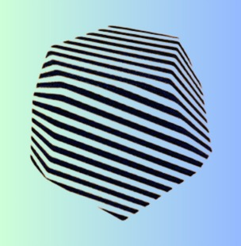

Experience

OrbytLabs
Co-Founder | Machine Learning Engineer
Jan 2023 – Present | Remote
- Real-Time Video Analytics: Developed systems using RTSP-to-WebRTC pipelines for low-latency surveillance and monitoring applications.
- Object Detection & Tracking: Built robust object detection and tracking solutions with YOLOv10/YOLOv11, DeepSORT, and OpenCV for smart security solutions.
- OCR Pipelines: Implemented pipelines using Tesseract, EasyOCR, and custom deep learning models to extract structured data from scanned documents and ID cards.
- LLM-Based Automation: Created chatbots and document understanding systems using GPT, LLaMA, and RAG to automate customer support and business operations.

Deutics Global
Associate Machine Learning Engineer
Jan 2025 – July 2025 | On-site, Pakistan
- Real-Time Video Analytics: Developed and optimized a real-time video analytics system by converting RTSP streams to WebRTC for efficient live video processing and reduced latency.
- Object Tracking: Implemented advanced tracking algorithms for real-time object tracking across frames, enabling movement monitoring and direction estimation.
- Optical Character Recognition (OCR): Built and integrated OCR pipelines using Tesseract, EasyOCR, and custom deep learning models to extract license plate numbers from images and video streams.
- Traffic Intelligence Algorithms: Designed and optimized algorithms for wait time estimation, queue detection, speed calculation, and traffic light violation detection to enhance traffic efficiency and enforce road safety regulations.
- Intrusion Detection: Implemented line and zone intrusion detection systems to monitor restricted areas, strengthen surveillance, and enforce access control.
FAST NUCES
Research Assistant
Sep 2023 – December 2024 | On-site
- Project: Developed a multi-class skin cancer classification system using the HAM10000 dataset, which contains a diverse collection of skin lesion images. The goal was to accurately classify different types of skin cancer.
-
NasNet:
- Achieved highest classification accuracy of 93% by leveraging the depth of the architecture.
- Fine-tuned the model to adapt to the nuances of the skin lesion dataset, ensuring precise classification results.
- Precision: 94%, Recall: 93%, F1 Score: 93%.
-
ShuffleNet:
- Enhanced computational efficiency using grouped convolutions and channel shuffling, reducing model size and improving processing speed.
- Maintained an accuracy of 87% — ideal for resource-constrained environments.
- Precision: 87%, Recall: 87%, F1 Score: 87%.
-
Custom CNN:
- Designed and implemented a custom CNN achieving an accuracy of 92%.
- Precision: 92%, Recall: 92%, F1 Score: 92%.
-
Data Preprocessing & Augmentation:
- Developed and optimized data pipelines to handle variations in the dataset.
- Improved model robustness and reduced overfitting through augmentation strategies.
-
Outcome:
- Gained hands-on experience in deep learning model development and optimization.
- Enhanced problem-solving skills in the healthcare domain, particularly in medical image classification.
Anonymous Tree
Machine Learning Engineer (Intern)
Jun 2023 – Aug 2023 | Remote, Pakistan
- Project: Personalized Recommendation System Development
- Objective: Built a personalized recommendation system leveraging user data, item metadata, and advanced machine learning techniques to offer tailored product suggestions.
- Key Responsibilities and Tasks:
-
Data Collection & Preprocessing:
- Collected and processed user interaction data (e.g., clicks, purchases, ratings) and item metadata (e.g., product categories, descriptions, attributes).
- Cleaned, normalized, and structured the data for efficient use in model training.
- Implemented techniques like data imputation and feature scaling to handle missing values and ensure accurate model predictions.
-
Model Development:
- Developed a content-based recommendation system utilizing item metadata (e.g., text-based features) to recommend similar products to users.
- Implemented collaborative filtering techniques such as user-based and item-based approaches.
- Combined both approaches into a hybrid recommendation system for improved accuracy.
-
Model Optimization:
- Tuned hyperparameters using Grid Search and Randomized Search for optimal performance.
- Evaluated models using Precision, Recall, F1 Score, and Mean Squared Error (MSE).
- Applied cross-validation to ensure generalization and prevent overfitting.
-
Algorithm Implementation:
- Integrated Matrix Factorization methods (e.g., SVD, KNN) for collaborative filtering.
- Utilized TF-IDF and Cosine Similarity for content-based filtering to identify similar items.
-
Performance Monitoring & Continuous Improvement:
- Monitored real-time recommendation performance and ensured alignment with business goals.
- Incorporated user feedback into model retraining and improvement cycles.
- Analyzed system performance over time and tested new features for better accuracy.
-
Outcome:
- Developed a personalized recommendation engine that significantly improved product discovery and user engagement.
- Enhanced user satisfaction and sales through relevant product suggestions.